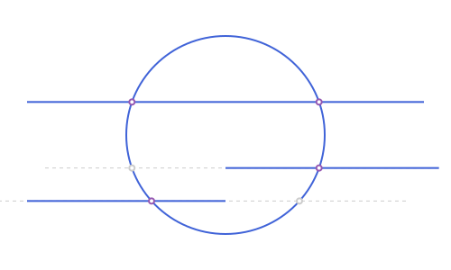
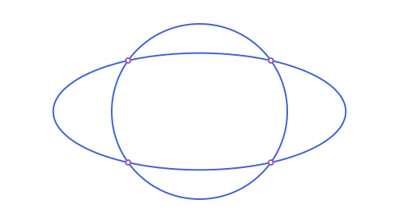
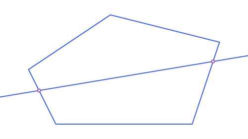
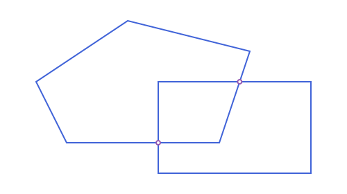
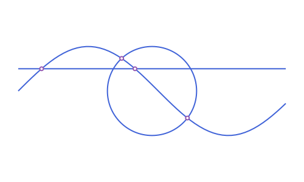

Intersections
intersection(a, b) returns the points where two objects meet, as a Vector of APPoints. The vector is empty when they do not meet, so the result is always safe to filter, map or length, and it is never nothing. The arguments can be given in either order.
Except when one side is an APAngle2, APHalfPlane2 or APStrip2 and the other a line, segment, ray, or a conic (circle, ellipse, parabola, hyperbola) or an arc of one: those three are regions, not curves, so there intersection gives the part of the other object that lies inside the region, in that object's own type (a point, a segment, a ray, an arc, the whole object, nothing, or a Vector of pieces), not the points where a boundary is crossed. For a line/segment/ray/circle/ellipse this is a bare value unless one side is a reflex APAngle2 or a strip wide enough to be crossed on both sides; for a parabola/hyperbola (open, unlike the other conics) it's always a Vector, since even a single half-plane can split one into two disjoint pieces. See Unbounded Regions: Half-Planes, Strips & Angles, Points, Lines & Rays: Angles and Conics: Tangents, Duality & Arcs.
Also except when both sides are one of APAngle2/APHalfPlane2/ APStrip2: there intersection gives the region common to both, whichever type it collapses to (nothing, an APLine, one of the same three types unchanged, a bounded APTriangle/APQuadrilateral, or an APUnboundedPolygon2), as a bare value unless one side is a reflex APAngle2, when it's a Vector of up to 2 pieces (up to 4 if both sides are reflex, possibly with some overlap between pieces in that last case). See Unbounded Regions: Half-Planes, Strips & Angles.
Also except when one side is an APAngle2/APHalfPlane2/APStrip2 and the other a straight-sided APTriangle/APQuadrilateral/ APStraightNgon: the part of the polygon inside the region, in the tightest fitting bounded type, a bare value unless one side is a reflex APAngle2 (curved-sided polygons aren't supported yet). See Unbounded Regions: Half-Planes, Strips & Angles.
using ApolloniusWhich pairs
| Pair | Points | Notes |
|---|---|---|
| line, line | 0 or 1 | none when parallel, and also none when they are the same line |
| line, circle | 0, 1 or 2 | two points in the direction of the line; one when tangent |
| circle, circle | 0, 1 or 2 | first the point on the left going from the first center to the second |
| line, ellipse, hyperbola or parabola | 0, 1 or 2 | order not specified |
| conic, conic | up to 4 | any two of circle, ellipse, hyperbola, parabola |
| segment or ray with anything above | as above | only the points inside the segment or ray are kept |
| arc of a conic with anything above | as above | only the points on the arc are kept |
| polyline, polygon, chain, bounding box | as many as the sides cross | the points on the boundary, see below |
| angle, half-plane or strip with a line, segment, ray, or any conic or arc | not points | the part of the other object inside the region, see above |
| angle, half-plane or strip with another one of the three | not points | the region common to both, see above |
| angle, half-plane or strip with a straight-sided triangle, quadrilateral or n-gon | not points | the part of the polygon inside the region, see above |
| parametric curve with a line, conic or any of the above | found by sampling | see below |
| point with anything above | 0 or 1 | the point itself, if it lies on the curve or boundary |
Two curves that coincide return an empty vector rather than infinitely many points. A tangent contact counts as one point.
c = APCircle2(APPoint(0.0, 0.0), 3.0)
l = APLine(APPoint(-5.0, 1.0), APPoint(5.0, 1.0))
intersection(l, c)2-element Vector{APPoint{2, Float64}}:
[-2.8284271247461903, 1.0]
[2.8284271247461903, 1.0]c2 = APCircle2(APPoint(4.0, 0.0), 3.0)
intersection(c, c2) # first the point above the line of centers, then the one below2-element Vector{APPoint{2, Float64}}:
[2.0, 2.23606797749979]
[2.0, -2.23606797749979]Segments, rays and arcs
A segment is a piece of a line, and a ray is half of one. intersection first finds the points on the whole line, then drops the ones that fall outside the piece. The same holds for an arc and its circle or conic.
r = APRay(APPoint(0.0, -1.0), APPoint(1.0, -1.0))
s = APSegment(APPoint(-6.0, -2.0), APPoint(0.0, -2.0))
intersection(r, c), intersection(s, c) # one point each: the other point of the line is off the ray, off the segment(APPoint{2, Float64}[[2.8284271247461903, -1.0]], APPoint{2, Float64}[[-2.23606797749979, -2.0]])
See script
using Apollonius, Luxor
import Luxor: julia_red, julia_blue, julia_green, julia_purple
import Apollonius: rotate, translate, distance, midpoint
lxm = @prepare_to_picture! width=500 height=300 margin=30 begin
c = APCircle2(APPoint(0.0, 0.0), 3.0)
l = APSegment(APPoint(-6.0, 1.0), APPoint(6.0, 1.0))
r = APRay(APPoint(0.0, -1.0), APPoint(1.0, -1.0))
s = APSegment(APPoint(-6.0, -2.0), APPoint(0.0, -2.0))
rl = APLine(APPoint(0.0, -1.0), APPoint(1.0, -1.0))
sl = APLine(APPoint(-6.0, -2.0), APPoint(0.0, -2.0))
kept = [intersection(l, c); intersection(r, c); intersection(s, c)]
dropped = [intersection(rl, c)[1]; intersection(sl, c)[2]]
end
begin
Drawing(lxm.width, lxm.height, :svg)
origin()
gsave()
setline(1); setdash("dash")
sethue("gray80")
path([rl, sl], action=:stroke, extend=200)
grestore()
sethue(julia_blue)
path([c, l, s], action=:stroke)
path(r, action=:stroke, extend=200)
sethue(julia_purple)
sethue("gray80")
sethue("white"); path(kept, action=:fillpreserve); sethue(julia_purple); strokepath()
sethue("white"); path(dropped, action=:fillpreserve); sethue("gray80"); strokepath()
finish()
preview()
endarc = APCircularArc2(c, APPoint(3.0, 0.0), APPoint(0.0, 3.0))
intersection(arc, l), intersection(arc, c2)(APPoint{2, Float64}[[2.8284271247461903, 1.0]], APPoint{2, Float64}[[2.0, 2.23606797749979]])
Two conics
Any two conics can meet in up to four points. A circle and an ellipse, for example:
e = APEllipse2(APPoint(0.0, 0.0), 5.0, 2.0)
length(intersection(e, c))4
Polygons, polylines and other composite objects
Every object made of pieces works with intersection, against any other one. A polyline, a polygon or a chain counts as the union of its sides. A bounding box is its four sides, an angle its two rays, a half-plane its boundary line and a strip its two lines. The result is the points where those curves meet, so it can hold many points, and a vertex shared by two sides is given once.
pg = APStraightNgon([APPoint(0.0, 0.0), APPoint(5.0, 0.0), APPoint(6.0, 3.0), APPoint(2.0, 4.0), APPoint(-1.0, 2.0)])
cut = APLine(APPoint(-2.0, 1.0), APPoint(7.0, 2.5))
intersection(pg, cut)2-element Vector{APPoint{2, Float64}}:
[5.764705882352941, 2.2941176470588234]
[-0.6153846153846154, 1.2307692307692308]
Two polygons give the points where their boundaries cross:
other = APStraightNgon([APPoint(3.0, -1.0), APPoint(8.0, -1.0), APPoint(8.0, 2.0), APPoint(3.0, 2.0)])
intersection(pg, other)2-element Vector{APPoint{2, Float64}}:
[3.0, 0.0]
[5.666666666666667, 2.0]
The same holds for the polygons with curved sides, such as a APCircularSector2, and for chains that mix segments and arcs.
The inside of a region is not part of its curve, so a point inside a polygon is not in the intersection of the polygon with a line that passes through it: the line meets the polygon's boundary where it enters and where it leaves. To ask whether a point is inside, use in (see Predicates).
Points
The intersection of a point with a curve or with the boundary of a region is the point itself if it lies there, and empty otherwise. The distance allowed is the one of is_on_line.
intersection(APPoint(2.5, 0.0), pg), intersection(APPoint(2.5, 1.0), pg)(APPoint{2, Float64}[[2.5, 0.0]], APPoint{2, Float64}[])Parametric curves
A APParametricCurve2 has no formula to solve, so its intersections are found numerically: the curve is sampled at n = 400 parameters, and each place where it passes from one side of the other object to the other is refined by bisection.
sine = APParametricCurve2(x -> APPoint(x, sin(x)), (0.0, 6.0))
intersection(sine, APLine(APPoint(0.0, 0.5), APPoint(1.0, 0.5)))2-element Vector{APPoint{2, Float64}}:
[0.5235987755982989, 0.5]
[2.617993877991494, 0.5000000000000003]
It works against a line, ray, segment, conic, conic arc, and every composite object above. Two limits come from sampling. A curve that only touches the other object without crossing it is missed, and so are two crossings that fall between two samples: pass a larger n. Two parametric curves are not supported.
Choosing one of the points
Since the order of the result is only fixed for a line and a circle, and for two circles, pick a point by where it is, not by its index. nearest_point takes the one closest to a reference, and other_intersection returns the second point when you already know one. Both are in Circles: How They Relate, under "Choosing among the intersections".
nearest_point(intersection(l, c), APPoint(3.0, 3.0)), other_intersection(l, c, APPoint(-sqrt(8.0), 1.0))([2.8284271247461903, 1.0], [2.8284271247461903, 1.0])Related functions
angle_measure_intersectiongives the measure of the angle at which two circles cross.radical_axisis the line through the two intersection points of two circles, and it exists even when they do not meet.radical_centeris the same idea for three circles: the one point where all three radical axes meet, andradical_circlethe circle centered there that cuts all three at right angles.tangent_pointsandtangent_linesgive the points and lines of tangency from a point to a circle, andexternal_tangent_linesandinternal_tangent_linesthe common tangents of two circles. All of them are in Circles: How They Relate.diagonal_intersectionis the point where a quadrilateral's two diagonals cross, in Polygons: Named Constructors & Quadrilaterals.